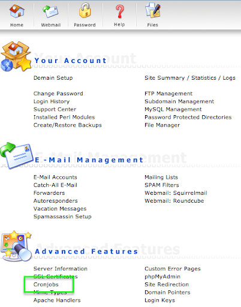
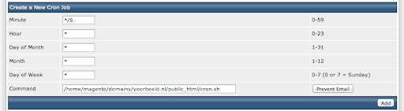
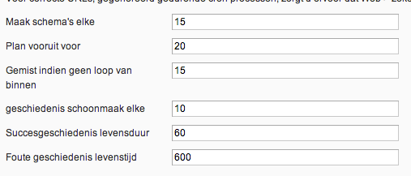
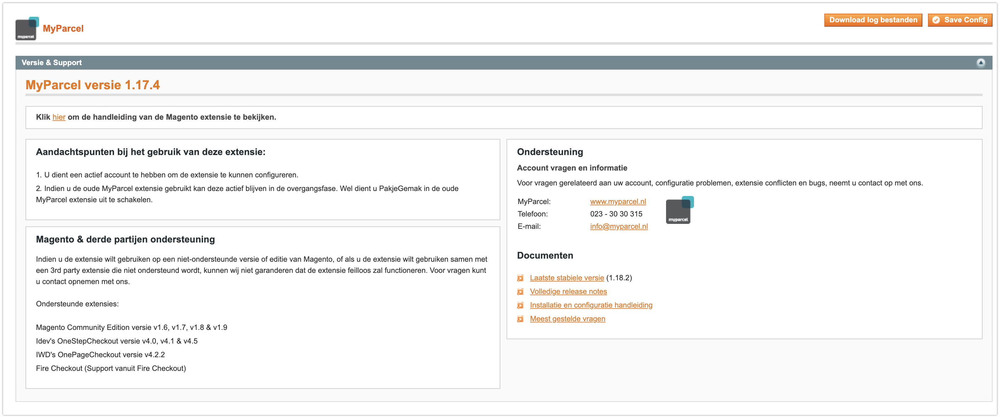
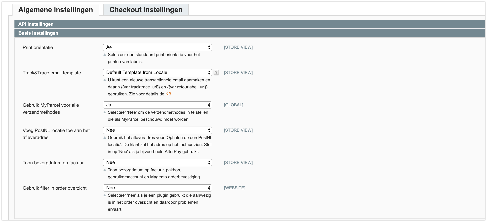
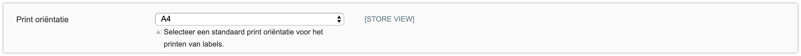
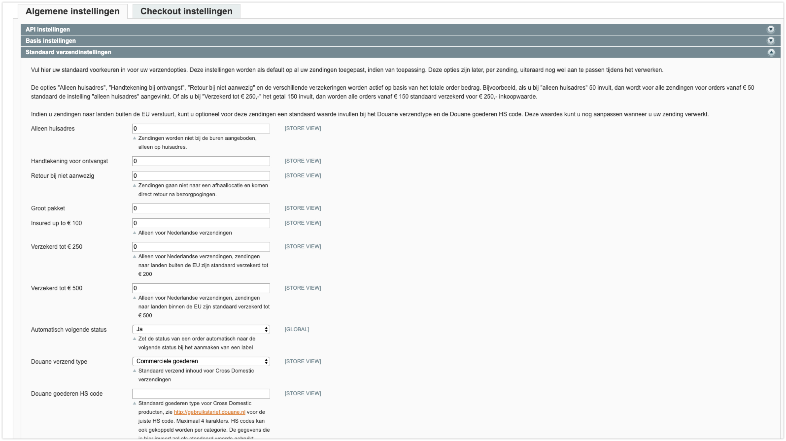
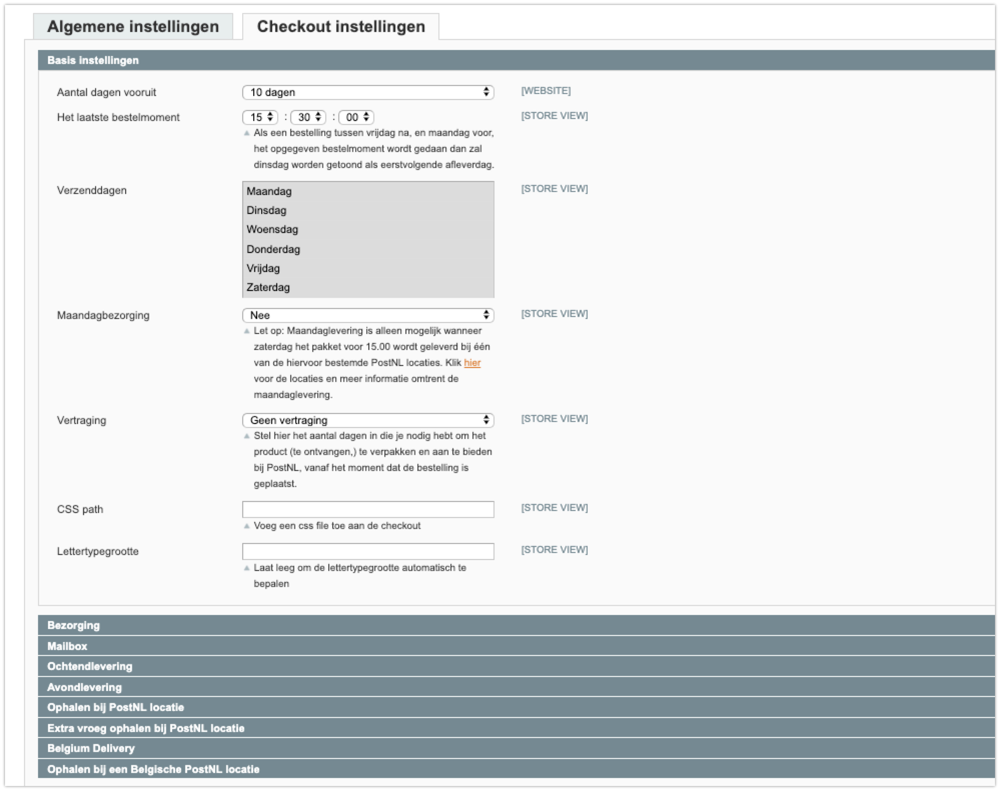
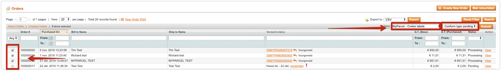

Inleiding
Deze handleiding beschrijft de functionaliteiten van de MyParcel extensie en hoe je de MyParcel extensie in jouw webwinkel kunt installeren.
In deze handleiding beschrijven wij de installatie via SSH/FTP. Mocht je hier hulp bij nodig hebben dan adviseren wij om contact op te nemen met je technisch beheerder.
Met deze Magento 1 extensie kun je vier soorten MyParcel zendingen aanmaken:
- Pakket zendingen waarbij het mogelijk is om het op te halen bij een PostNL locatie
- Brievenbuspakje
- Digitale postzegels
- Ongefrankeerd label
Plugins van derden die we ondersteunen
1. Installatie
Wij adviseren de installatie altijd eerst op een testomgeving uit te voeren en een back-up te maken van jouw webshop voor je begint.
1.1 Nieuwe installatie
Om de MyParcel Magento extensie te gebruiken dient uw server aan de onderstaande vereisten te voldoen:
- Minimaal PHP versie 5.6
De onderstaande Magento versies worden ondersteund:
- Community 1.6, 1.7, 1.8, 1.9
Extensie downloaden
Je kunt de extensie op de volgende locatie downloaden:
- Github MyParcel voor de meest recente versie (Om het zip bestand te downloaden klik onder Downloads op source code.)
Compiler uitschakelen
Voordat je met de installatie aan de slag gaat is het belangrijk dat de compiler in jouw Magento installatie uitgeschakeld wordt indien deze aan staat. Wanneer je bent ingelogd in jouw Magento omgeving kun je de compiler uitschakelen via het menu: Systeem → Hulpmiddelen → Compilatie.
Mappen & bestanden uploaden
Het .zip bestand bevat twee mappen:
- app
- skin
Upload deze mappen naar jouw Magento installatie.
Er worden geen bestanden overschreven. Als het SSH/FTP programma vraagt of je de mappen wilt samenvoegen of vervangen kies dan voor de optie samenvoegen.
Cache legen & opnieuw inloggen
Login op jouw Magento beheeromgeving en ga naar het menu Systeem → Beheer cache. Klik op Selecteer alles, kies in het dropdownmenu voor de optie Ververs en klik op de Bevestig button.
Klik vervolgens rechtsboven op Uitloggen en log opnieuw in op jouw beheeromgeving.
Cron controleren
De MyParcel extensie maakt gebruik van enkele cronjobs. Deze zijn nodig om de statussen van zendingen periodiek bij te werken in jouw backend. De extensie haakt in op de cronfunctionaliteit van Magento.
Neem contact op met jouw ontwikkelaar als je hier vragen over hebt.
Server Cronjob
De wijze waarop je cronjobs op jouw server instelt verschilt per hostingprovider omdat er meerdere webserverbeheer systemen bestaan. Voorbeelden hiervan zijn DirectAdmin, Plesk en Cpanel. Onderstaand een voorbeeld hoe je in DirectAdmin een cronjob insteld voor Magento.
- Ga naar het account waar de Magento omgeving op draait en klik Cronjobs aan. 
- Voor een Magento Community webshop stel je in dat de cronjob elke 5 minuten geactiveerd moet worden (zoals in onderstaand voorbeeld). 
-
Controleer met SSH of je de cronjob kunt activeren.
Dit kan door in een terminal venster in te loggen en het command in te voeren. In ons voorbeeld is dat /home/magento/public_html/cron.sh. Dit dien je te doen met root rechten. Mocht dit niet werken of mocht de server geen shell mogelijkheid hebben dan kunt je uitwijken naar het cron.php bestand. In dat geval kun je twee cronjobs aan maken. Je kunt aan geven waar PHP draait voor de opdrachten en de locatie achterhalen met de PHP constante PHP_BINDIR.
Achter de opdrachten moet je een parameter te plaatsen:- Opdracht 1: cron.php -malways 1
- Opdracht 2: cron.php -mdefault 1
- Zie onderstaand screenshot voor een voorbeeld.
- Zorg dat de cron.sh (of cron.php) bestand 755 rechten heeft. De server roept nu elke 5 minuten de cron functionaliteit van Magento aan.
-
Magento cron
- Ga naar het menu System → Configuration → Advanced → System → Cron (Scheduled Tasks).
- Zorg dat de instellingen gelijk zijn aan onderstaande afbeelding.

- Je kunt het beste de database openen en de table cron_schedule openen om te controleren of de cron succesvol draait. Die zal direct gevuld worden en daarin kun je zien of de aanpassingen effect hebben.

1.2 Updaten bestaande installatie
Klik hier voor de nieuwste versie van de MyParcel extensie.
Om het zip bestand te downloaden klik onder Downloads op source code.
Update stappen
1 Compiler uitschakelen
Schakel de compiler uit indien deze is ingeschakeld.
Dit kan ingesteld worden in het menu Systeem → Gereedschap → Compilatie
2 Mappen & bestanden uploaden
Het .zip bestand bevat twee mappen:
- app
- skin
Upload deze mappen naar jouw Magento installatie.
Als het SSH/FTP programma vraagt of je mappen wilt samenvoegen of vervangen kies dan voor samenvoegen.
Cache legen & opnieuw inloggen
Login op jouw Magento beheeromgeving en ga naar het menu Systeem → Beheer cache. Klik op Selecteer alles, kies in de dropdown voor Ververs en klik op de Bevestig button.
Klik rechtsboven op Uitloggen en log opnieuw in op uw beheeromgeving.
De extensie is nu geüpgraded.
1.3 Veelgestelde vragen over de installatie
Zet hier de veel gestelde vragen omtrent de installatie
2. Configuratie

Ga naar het menu Systeem → Configuratie → Verkoop → MyParcel om de MyParcel extensie te configureren.
Onder het kopje 'Versie & Support' kun je zien welke versie van de extensie jij gebruikt.
2.1 Algemeen
Op het tabblad Algemene instellingen kun je Api instellingen, Basis instellingen en de Standaardverzendinstellingen wijzigen en/of aanvullen naar jouw wensen.
API instellingen
Hier kun je jouw API gebruikersnaam en jouw API Key invullen. Deze zijn nodig om de zendingen door te kunnen zetten naar MyParcel.
Deze gegevens kun je vinden in jouw MyParcel account onder Instellingen → Algemeen
2.2 Basis Instellingen
Print oriëntatie
Kies de Print oriëntatie. Als je kiest voor A4 formaat zullen vier verzendlabels per A4 vel geprint worden. Als je kiest voor A6 formaat zijn de verzendlabels geschikt voor het printen met een speciale labelprinter zoals een Zebra of Dymo 4XL.
Track&Trace e-mail template
Je kunt uit 2 opties kiezen voor het versturen van Track en Trace e-mails.
- De Track&Trace mails via MyParcel versturen
- De Track&Trace mails vanuit je Magento shop versturen.
Via MyParcel
Volg hiervoor onderstaande stappen:
- Log in op MyParcel.nl
- Ga naar het menu Instellingen → Track & Trace
- Stel hier jouw Track&Trace mails naar wens in
Via je Magento webshop:
Volg hiervoor onderstaande stappen:
- Ga naar Systeem → Transactionele Emails
- Kies voor de button Nieuw Sjabloon Toevoegen
- Selecteer het sjabloon Verzendings update en kies Laad Sjabloon.
- Geef een naam aan het sjabloon in het veld Naam Sjabloon. Dit is voor intern gebruik.
- Pas de inhoud van het sjabloon naar wens aan. Je kunt hiervoor de variabele {{var tracktrace_url}} en {{var retourlabel_url}} gebruiken.
- Om er voor te zorgen dat er alleen tekst wordt getoond wanneer deze variabelen aanwezig zijn, kan je gebruik maken van {{depend tracktrace_url}} en {{depend retourlabel_url}}.
- Kies voor de button Sjabloon Opslaan.
- Ga naar het menu Systeem → Configuratie → MyParcel en vervolgens naar de tab Algemene instellingen.
- Selecteer in de dropdown Track&Trace email template het sjabloon dat je zojuist hebt aangemaakt.
Gebruik MyParcel voor alle verzendmethodes
Kies hier voor de optie Ja om alle bestaande verzendmethodes in Magento gebruiken om door te zetten naar MyParcel.
Wanneer je deze optie niet wilt gebruiken kies je voor Nee. Je kunt nu de verzendmethoden zelf kiezen welke gebruikt kunnen worden door de MyParcel plugin.
2.3 Standaard verzendinstellingen

Vul hier uw standaard voorkeuren in voor uw verzendopties. Deze instellingen worden als default op al uw zendingen toegepast, indien van toepassing. Deze opties zijn later, per zending, uiteraard nog wel aan te passen tijdens het verwerken.
De opties "Alleen huisadres", "Handtekening bij ontvangst", "Retour bij niet aanwezig" en de verschillende verzekeringen worden actief op basis
van het totale order bedrag. Bijvoorbeeld, als u bij "alleen huisadres" 50 invult, dan wordt voor alle zendingen voor orders vanaf € 50 standaard de instelling "alleen huisadres" aangevinkt. Of als u bij "Verzekerd tot € 250,-" het getal 150 invult, dan worden alle orders vanaf € 150 standaard verzekerd voor € 250,- inkoopwaarde.
Indien u zendingen naar landen buiten de EU verstuurt, kunt u optioneel voor deze zendingen een standaard waarde invullen bij het Douane verzendtype en de Douane goederen HS code. Deze waardes kunt u nog aanpassen wanneer u uw zending verwerkt.
Standaard verzendopties
Op basis van de ingevulde orderwaarde worden de onderstaande opties geactiveerd. Voorbeeld: Indien je bij Verzekerd tot € 250 bijvoorbeeld de waarde 100 invult, worden orders met een verkoopwaarde boven de € 100 automatisch verzekerd tot een waarde van € 250. Deze logica is voor alle onderstaande opties in te stellen:
- Alleen huisadres
- Handtekening bij ontvangst
- Retour bij niet aanwezig
- Groot pakket
- Verzekerd tot € 100
- Verzekerd tot € 250
- Verzekerd tot € 500
Let op: Op het moment dat 0 ingevuld staat, is de optie niet geactiveerd. Bij invullen van 1 of hoger staat de optie actief.
Douane verzend type
Kies in het dropdownmenu bij het configuratieveld Douane verzend type de optie die bij uw zendingen past.
Dit is een standaard instelling voor 'Rest Of World' zendingen. Wanneer je een zending gaat doorzetten naar MyParcel, kun je dit per zending nog aanpassen. Deze optie vervalt als labels in batch aanmaakt.
Douane goederen HS code
Vul in het veld Douane goederen HS code de gewenste HS code in.
Je kunt de codes vinden op deze link:
https://tarief.douane.nl/arctictariff-public-web/
Let op: de HS code moet exact vier cijfers zijn.
Dit is een standaard instelling voor 'Rest Of World' zendingen. Wanneer je een zending gaat doorzetten naar MyParcel, kun je dit per zending nog aanpassen. Deze optie vervalt als labels in batch aanmaakt.
Het is ook mogelijk om per productcategorie een eigen HS code mee te geven. Deze optie kun je invullen onderaan de pagina van een gewenste categorie. Ga naar Catalogus -> Beheer categorieën.
Versturingsmethodes configuratie
Ga naar het menu Systeem → Configuratie → Verkoop → Versturings Methodes → MyParcel.
Activeer de versturingsmethode. Kies vervolgens een Titel en een Methodenaam.

Activeer MyParcel extensie
Schakel de extensie in door Activeer MyParcel extensie op Ja te configureren.
Tarief type
Je kunt gebruik maken van twee methodes om de verzendkosten te berekenen:
- Plat: Bij deze methode kun je direct het type en de prijs invullen.
- Tabel: Bij deze methode worden de tarieven uit de Table Rates van Magento gebruikt.
- Ga naar het menu Systeem → Configuratie → Verzendmethodes → Myparcel
- Kies bij Tarief type voor Table en bij Voorwaarde een gewenste instelling.
- Schakel de tabel tarieven verzendmethode van Magento zelf uit. Om de verzendmethode van Magento uit te schakelen, volg je Verzendmethode → tarieven prijstabel en zet ingeschakeld op nee.
- Maak een CSV Table Rates bestand. Op deze pagina kun je een CSV genereren: www.elgentos.nl/tablerates. Tip: Voor gratis verzendkosten vanaf een bepaald bedrag maak je een extra regel aan bij het desbetreffende land.
- Zorg ervoor dat je werkt op website niveau links bovenin bij scope huidige configuratie. Hier selecteer je de main website.
- Upload het Table Rates CSV bij de verzendmethode Table Rates. De MyParcel extensie gebruikt de Table Rates van Magento zelf.
2.Checkout instellingen
Op het tabblad 'Checkout instellingen' kun je alle gewenste instellingen toepassen die zichtbaar zijn in de checkout. Dit tabblad wordt onderverdeeld in Basis instellingen, Bezorging, Mailbox, Ochtendlevering, Avondlevering, Ophalen en Extra vroeg ophalen (de laatste komt te vervallen)
Aantal dagen
Met de functie aantal dagen vooruit kun je aangeven hoeveel dagen vooruit jouw klant een levermoment kan kiezen. Wanneer je kiest voor 7 dagen is laatste keuzemogelijkheid precies 7 dagen later. De dagen waarop er geen leveringen mogelijk zijn, worden niet weergegeven in de checkout. (zondag en maandag)
#!#!#!#!#!#!In de afbeelding hierboven kun je zien dat er is gekozen om 7 dagen vooruit te laten zien. In de afbeelding hieronder kun je zien hoe jouw klant dit te zien krijgt in de checkout. Er worden in totaal 5 leverdagen laten zien omdat de zondag en maandag geen leverdagen zijn. Het laatste levermoment is precies 7 dagen verder.

Laatste bestelmoment
Hiermee kun je instellen tot welk moment het mogelijk is voor jou een bestelling klaar te maken voor levering. Indien jij hier tot 16:00 uur instelt, zullen alle klanten na dit tijdstip een latere dag in hun checkout te zien krijgen als eerste levermogelijkheid.
Bijvoorbeeld: Jij hebt een verwerktijd van 1 dag en kunt tot 16:00 bestellingen verwerken. De bestelling komt binnen op dinsdag 04 oktober om 16:02, de eerst volgende mogelijkheid voor jouw klant zou dan donderdag 06 oktober worden. Dit betekent voor jou dat je het pakket op woensdag zal inleveren bij een PostNL punt.
Laatste bestelmoment
Hiermee kun je instellen tot welk moment het mogelijk is voor jou een bestelling klaar te maken voor levering. Indien jij hier tot 16:00 uur instelt, zullen alle klanten na dit tijdstip een latere dag in hun checkout te zien krijgen als eerste levermogelijkheid.
Bijvoorbeeld: Jij hebt een verwerktijd van 1 dag en kunt tot 16:00 bestellingen verwerken. De bestelling komt binnen op dinsdag 04 oktober om 16:02, de eerst volgende mogelijkheid voor jouw klant zou dan donderdag 06 oktober worden. Dit betekent voor jou dat je het pakket op woensdag zal inleveren bij een PostNL punt.
Verzenddagen
Bij de verzenddagen kun je invullen op welke dagen het voor jou mogelijk is pakketten in te leveren voor collectie op dezelfde dag. In de checkout wordt hier rekening mee gehouden qua keuzes die worden getoond aan jouw klant.
Maandag levering
Er kan ook gekozen worden om een pakket op maandag te laten bezorgen, houd er rekening mee dat je bij verzenddagen wel de zaterdag selecteert als verzenddag.
Let op: Maandaglevering is alleen mogelijk wanneer het laatste bestelmoment voor maandagbezorging op 15.30 is ingesteld en zaterdag het pakket voor 15.00 wordt geleverd bij één van de hiervoor bestemde PostNL locaties.

Vertraging
Indien jij een langere verwerkingstijd nodig hebt om tot leveren over te gaan kun je dat hier aangeven. Hier zal rekening mee worden gehouden in het tonen van de beschikbare bezorgdagen in de checkout.
2.5 Bezorging

Bezorging titel
Je kunt zelf kiezen welke titel jij de bezorging geeft. Het advies is om "PostNL" hierin te plaatsen.
Standaard bezorging actief
Met deze instellingen kan je de standaard levering uit zetten. Deze zal dan ook niet in de checkout te zien zijn.
Leeftijdscontrole 18+
De leeftijdscheck is bedoeld voor pakketzendingen waarvoor de ontvanger 18+ moet zijn en dit moet bewijzen door middel van een identiteitsbewijs. Met deze verzendoptie zijn handtekening voor ontvangst en alleen huisadres inbegrepen. De leeftijdscheck is verder uitgesloten van de bezorgopties in de ochtend- en avondlevering.
Alleen huisadres
Je kunt hiermee aangeven of jouw klanten hier zelf voor kunnen kiezen in de checkout. Indien jij dit wilt weergeven in de checkout kies dan voor Ja. Ook is het mogelijk om aan deze optie een eigen naam mee te geven, in het voorbeeld heet deze optie 'Alleen bij mij bezorgen genoemd'. Als laatste optie kun je er ook een meerprijs aan koppelen, in het voorbeeld kost deze optie €0.45 extra.
Handtekening voor ontvangst
Je kunt hiermee aangeven of jouw klanten hier zelf voor kunnen kiezen in de checkout. Indien jij dit wilt weergeven in de checkout kies dan voor Ja Ook is het mogelijk om aan deze optie een eigen naam mee te geven, in het voorbeeld heet deze optie 'Handtekening voor ontvangst'. Als laatste optie kun je er ook een meerprijs aan koppelen, in het voorbeeld kost deze optie €0.45 extra.
Er is ook een optie gemaakt voor een gecombineerde meerprijs voor de keuzes samen. Alleen bij mij bezorgen en Handtekening voor ontvangst te bepalen. Je kunt zelf een prijs naar eigen inzicht invullen.
Brievenbuspakje/ Mailbox

Het is mogelijk om automatisch brievenbuspakjes te laten selecteren afhankelijk van de instellingen. Dit kan op basis van gewicht of volume welke jij kunt instellen bij de productgegevens. Catalog -> Manage products -> Klik op edit.

Het is mogelijk om dit te tonen in de checkout waarbij jouw klant een keuze heeft. In dit geval zullen er meerdere verzendopties worden getoont, namelijk: Pakket, Brievenbuspakje en indien ingesteld de keuze om op te halen bij een PostNL locatie. Wil je liever niet deze keuze aan jouw klant bieden, kun je de titel leeg laten. In dit geval zal er alleen een brievenbuspakje worden aangemaakt bij MyParcel maar wordt het gewone tarief berekend.
Wanneer de optie 'Brievenbuspakje tonen met andere opties' op nee wordt gezet dan zal er in de checkout alleen de optie Brievenbuspakje te zien zijn. Dit is vooral handig wanneer er gekozen wordt voor een product dat onder Brievenbuspakje valt en je de klant geen andere optie wil geven.


Ochtendlevering
Het is mogelijk om jouw klanten de mogelijkheid te geven te kiezen voor ochtendlevering (bezorging tussen 08:00 en 12:00). Wanneer je deze optie hebt geactiveerd zal er een extra keuzemogelijkheid verschijnen in de checkout. Tevens is het mogelijk hier een meerprijs aan te koppelen. De prijs die hier wordt ingevuld zal bij het huidige tarief worden opgeteld. Jouw klant ziet in de checkout het totaalbedrag van de zending.

Avondlevering
Het is ook mogelijk om jouw klanten de mogelijkheid te geven te kiezen voor avondlevering (bezorging vanaf 18:00 uur). Wanneer je deze optie hebt geactiveerd zal er net een extra keuzemogelijkheid verschijnen in de checkout. Tevens is het mogelijk hier een meerprijs aan te koppelen. De prijs die hier wordt ingevuld zal bij het huidige tarief worden opgeteld. Jouw klant ziet in de checkout het totaalbedrag van de zending.

Ophalen PostNL locatie Nederland
Met deze optie kunnen jouw klanten kiezen om hun pakket bij een PostNL locatie op te halen. Deze locatie kunnen zij zelf kiezen in de checkout. Je kunt hier eventueel ook een meerprijs voor rekenen, maar MyParcel rekent er geen extra kosten voor.

Ophalen PostNL locatie België
Met deze optie kunnen jouw klanten kiezen om hun pakket bij een PostNL locatie in België op te halen. Deze locatie kunnen zij zelf kiezen in de checkout. Je kunt hier eventueel ook een meerprijs voor rekenen, maar MyParcel rekent er geen extra kosten voor.


3. Gebruik plugin
Aanmaken van één verzendlabel/ Aanmaken meerdere verzendlabels
Een MyParcel zending aanmaken kan op twee manieren:
Batch methode in het bestellingenoverzicht.
- Selecteer de orders die je wilt exporteren naar MyParcel
- Kies in de actie balk MyParcel - creëer labels
- Kies voor je pakkettype (indien dit conform de keuze van de consument uit de checkout moet zijn, kies dan voor conform type zending) en vervolgens kun je klikken op verstuur
- Kies voor de juiste printpositie, indien je voor A4 hebt gekozen
- Het PDF verschijnt op je computer en is klaar om te printen
Per bestelling als je een Magento zending aanmaakt.
- Klik op de desbetreffende order
-
Kies rechtsboven voor de knop verstuur

-
Rechts onderin verschijnt een geel vak. Hier kan je zowel het verzendtype aanpassen als de beschikbare verzendopties per verzendtype.

- Verstuur zending naar MyParcel
Het is ook mogelijk om een order in deelleveringen te versturen, bijvoorbeeld wanneer de order in totaliteit te zwaar of te groot is om in één doos te versturen of wanneer een deel van de levering tijdelijk niet voorradig is en je deze later alsnog wil toesturen.
- Je kunt hiervoor de order bekijken en rechtsboven kiezen voor Verstuur.
- Pas de hoeveelheid aan bij Items te verzenden en kies rechtsonder voor Stuur verzending.
- Je kunt hierna op dezelfde wijze nog een verzendlabel aanmaken voor dezelfde order. Beide verzendingen worden opgeslagen in de order.
Genereer digitale postzegel
In de plugin is het mogelijk om op twee mannieren een digitale postzegel te genereeren:
Batch methode in het bestellingenoverzicht.
Als je de desbetreffende order selecteert dan kan je bij acties voor MyParcel - creëer labels kiezen. Bij de pakkettype zal je dan digitale postzegel als een optie zien.

Met deze optie zal het gewicht van de totale order automatisch worden berekend.
Let op: hiervoor moeten de gewichten van de producten wel goed zijn ingevuld.
Per bestelling als je een Magento zending aanmaakt.
Als je in de order op de knop ship klikt zal je rechts onderin de verzendmethodes vinden. Hier is het ook mogelijk om een digitale postzegel te selecteren. Naast het selecteren van de zendingtype is het ook mogelijk om een gewicht mee te geven. Dit is dan ook het gewicht wat gebruikt gaat worden voor het aanmaken van een digitale postzegel.

Als je vervolgens op de knop Submit Shipment klikt zal er een concept aangemaakt worden en kan de digitale postzegel geprint worden.
Genereer retourlabel
Klik in het order overzicht op de betreffende order. Op het detailscherm klik je links in het menu op de tab Zendingen. Klik de betreffende zending aan die geretourneerd moet worden.

Je bent nu op het verzending detail scherm waar je rechtsboven de button Genereer retourlabel ziet staan.

Jouw klant zal van MyParcel een e-mail ontvangen met een link naar het verzendlabel indien er een e-mailadres is ingevuld bij de zending. Je kunt jouw e-mail voor retouren binnen MyParcel eventueel nog personaliseren. Ook is het mogelijk om een eigen bijdrage voor jouw klant in te stellen. Je kunt dit doen door in te loggen bij MyParcel bij Instellingen → Retour en dan onderaan de pagina Pas e-mail aan.
Genereer ongerelateerde retourlabel
Je kunt vanuit jouw order overzicht een retourlabel versturen naar jouw klant. Klik hiervoor op de button Mail retourlabel

Vervolgens opent er een scherm waarin je de naam en het e-mailadres van jouw klant invullen. Ook is het mogelijk een kenmerk mee te geven zodat je eenvoudig kunt zien om welke zending het gaat.

3.1 Aanmaken van één verzendlabel
Beschrijf hier hoe je een verzendlabel aanmaakt.
3.2 Aanmaken meerdere verzendlabels
Beschrijf hier hoe je meerdere verzendlabels aanmaakt.
3.3 Aanpassen van een enkele zending
Beschrijf hier hoe je pakket- en verzendopties aanpast.
3.4 Checkout
Beschrijf hier hoe de consument de checkout gebruikt.
3.5 Veelgestelde vragen over het gebruik van de plugin
Ondersteunen jullie mijn checkout?
De verzendmethode MyParcel maakt gebruik van standaard Magento functionaliteiten. Dit houdt in dat de verzendmethode in elke checkout die volgens de Magento richtlijnen is opgebouwd werkt.
MyParcel 'Ophalen op een PostNL locatie' wordt ondersteund voor de onderstaande checkout extensies:
- OnePageCheckout, dit is de standaard checkout van Magento.
- IWD checkout
- Idev OneStepCheckout, deze kan je aanschaffen op www.onestepcheckout.com. Let op, je dient nooit 'Ophalen op een PostNL locatie' als default verzendmethode in te stellen.
- Fire Checkout (support vanuit Fire Checkout)
Ik gebruik een postcode check extensie, is dat een probleem?
In principe is het mogelijk een postcode check extensie te gebruiken in combinatie met de MyParcel Magento extensie.
Hoe kan ik gratis verzendkosten instellen?
Naast de Table Rates kun je ook gratis verzendkosten instellen via:
- Promoties > Winkelwagen prijsregels.
- Klik rechts bovenin op Nieuwe regel toevoegen.
- Bij Regelgegevens geef je de regel een naam (voorbeeld: ‘gratis verzenden vanaf 50’). Zet de statusop actief en kies bij websites en klantengroepen alle opties.
- Klik links boven op Voorwaarden en schrijf zelf de regel door op + te klikken. (voorbeeld: Subtotaal gelijk aan of groter dan 50)
- Ga naar de volgende stap acties en geef bij gratis verzending aan Alleen voor betreffende artikelen.
- Klik rechts bovenin op opslaan.